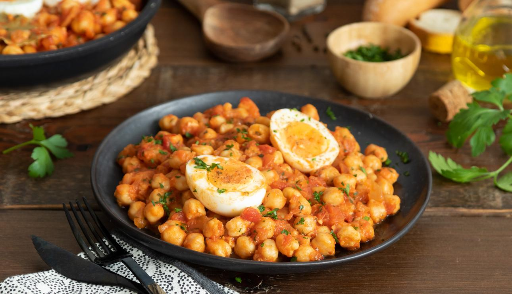

Ingredientes: 4 Raciones
- 350g de Tomate frito estilo casero
- 650g de garbanzos cocidos
- 200g de cebolla
- 4 huevos
- 1 diente de ajo
- pimentón dulce o picante
- 1 hoja de laurel
- perejil fresco al gusto
- 1 pizca de sal
- 1 pizca de pimienta
- 2 cucharas aceite de oliva
Instrucciones
- Cocer los huevos durante 10 minutos y dejar enfriar en agua fría.
- Pelar y picar el ajo y la cebolla. Picar finamente el perejil al gusto.
- Calentar 2 cucharas de aceite, sofreír el ajo y la cebolla, durante 8-10 min a fuego medio, removiendo
de vez en cuando.
- Añadir los garbanzos y el pimentón al gusto y sofreírlos durante 5 min, a fuego medio removiendo de vez
en cuando.
- Añadir el laurel, el perejil y salpimentar. Añadir el tomate frito Solis estilo casero y dejar cocinar
unos 2 min, removiendo.
- Pelar los huevos, cortar y servir con los garbanzos.
¡Los garbanzos con tomate es una receta tradicional, saciante y nutritiva, aporta proteínas y fibra en
cantidades importantes. Puedes complementarla con un primer plato ligero, como una ensalada verde variada
que te ayudará a alcanzar las raciones de verdura recomendadas a lo largo del día.!
INICIO